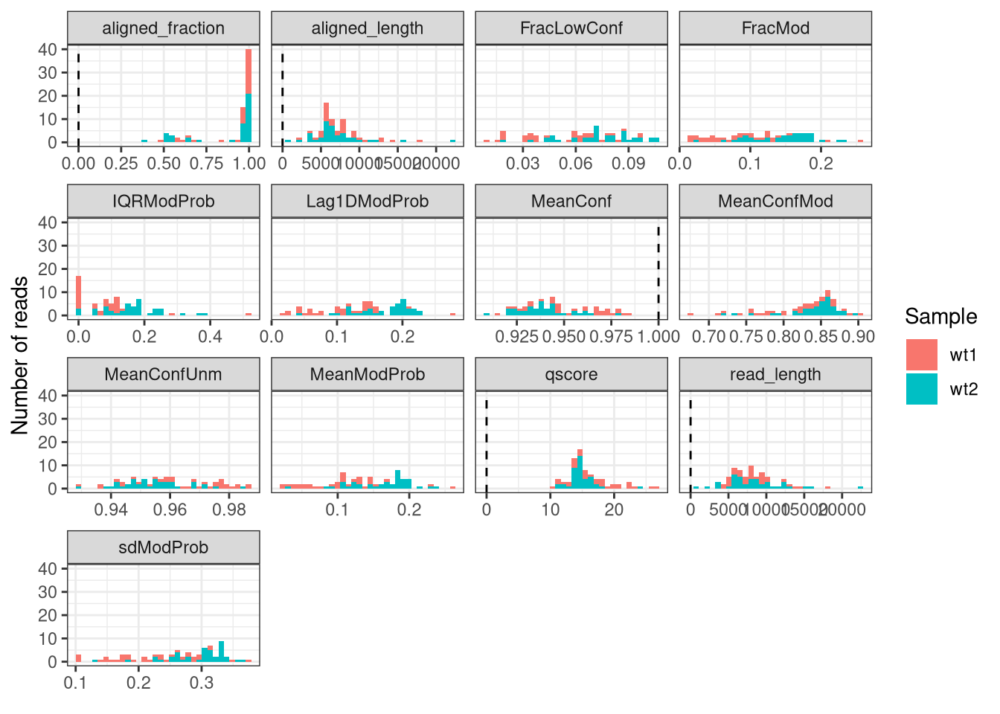

BSgenomeName <- "BSgenome.Mmusculus.GENCODE.GRCm39.gencodeM34"
library(footprintR)
library(BSgenomeName, character.only = TRUE)
library(SummarizedExperiment)
library(SparseArray)
# Load genome
gnm <- get(BSgenomeName)
genome(gnm) <- "mm39"3 Quality control and filtering
This chapter explains how to use footprintR to filter single molecule footprinting data. The package contains functionality to calculate a collection of quality statistics for each read, and use these to filter out low-quality reads. This filtering can be done either on the imported SummarizedExperiment object, or directly on the modBam file (which would generate another, filtered modBam file). footprintR also provides several ways to filter out individual genomic positions based on, e.g. the genomic sequence or the read coverage.
We start by loading the required packages. In addition to the software package, we load a BSgenome object providing the mouse genome sequence.
3.1 Creating a QC report
3.2 Position filtering
To illustrate the position-level filtering of imported data, we first read 6mA data from a small genomic region for two samples. We add the sequence context (a single nucleotide) to be able to use this information as a basis for filtering.
se <- readModBam(
bamfiles = c(wt1 = "data/mESC_wt_6mA_rep1.bam",
wt2 = "data/mESC_wt_6mA_rep2.bam"),
modbase = "a",
regions = "chr8:39286301-39287100",
seqinfo = seqinfo(gnm),
sequenceContextWidth = 1,
sequenceReference = gnm
)
seclass: RangedSummarizedExperiment
dim: 21456 2
metadata(3): readLevelData variantPositions filteredOutReads
assays(1): mod_prob
rownames(21456): chr8:39269571:- chr8:39269579:- ... chr8:39303298:- chr8:39303300:-
rowData names(1): sequenceContext
colnames(2): wt1 wt2
colData names(4): sample modbase n_reads readInfoThe sequence information is stored in the rowData of se:
rowData(se)DataFrame with 21456 rows and 1 column
sequenceContext
<DNAStringSet>
chr8:39269571:- A
chr8:39269579:- A
chr8:39269588:- A
chr8:39269589:- A
chr8:39269612:- A
... ...
chr8:39303283:- A
chr8:39303284:- A
chr8:39303297:- A
chr8:39303298:- C
chr8:39303300:- APosition filtering can now be performed with the filterPositions function. The filters argument define which filters to apply, as well as the order (sequence context, coverage, removal of positions without non-NA values). Here, we retain only positions where the genome sequence is an A, and the coverage (the number of overlapping reads) is at least five. The assayNameCov argument indicates which assay will be used to define the coverage. If this is a read-level assay (like here), coverage will first be calculated using flattenReadLevelAssay. For more precise control, the summary assay can also be manually calculated and added to se beforehand, and specified in assayNameCov.
sefilt <- filterPositions(
se,
filters = c("sequenceContext", "coverage", "all.na"),
sequenceContext = "A",
assayNameCov = "mod_prob",
minCov = 5
)
sefiltclass: RangedSummarizedExperiment
dim: 10957 2
metadata(3): readLevelData variantPositions filteredOutReads
assays(1): mod_prob
rownames(10957): chr8:39279307:- chr8:39279308:- ... chr8:39298917:- chr8:39298921:-
rowData names(1): sequenceContext
colnames(2): wt1 wt2
colData names(4): sample modbase n_reads readInfoIn this case, the position filtering reduced the number of unique positions from 21456 to 10957 by 48.9%. However, the number of non-NA values in the matrix is only reduced from 165914 to 148815 (10.3%), confirming that the filtered-out positions are generally covered only by few reads.
In addition to explicit filtering like here, many other functions in footprintR allow built-in filtering for a specific sequence context.
3.3 Read filtering
3.3.1 Filtering a SummarizedExperiment object
In addition to the position filtering illustrated above, footprintR also provides functionality for calculating read-level quality scores and filtering out reads with low quality. The calculation of the quality scores is done using the addReadStats function, and the filtering is performed via the filterReads function.
# Calculate read statistics
sefilt <- addReadStats(
sefilt,
name = "QC"
)
# The calculated read statistics are stored in the colData
colData(sefilt)DataFrame with 2 rows and 5 columns
sample modbase n_reads readInfo
<character> <character> <integer> <List>
wt1 wt1 a 34 20.3297:17986:17872:...,19.7905:10469:10421:...,13.2784:7876:7761:...,...
wt2 wt2 a 41 14.1235:22453:22149:...,15.9814:15617:15460:...,14.3505:12359:12212:...,...
QC
<List>
wt1 0.0618421:0.0455829:0.967676:...,0.0545563:0.0386562:0.971495:...,0.1317097:0.1049275:0.931608:...,...
wt2 0.195971:0.186199:0.931852:...,0.169650:0.156304:0.944134:...,0.189312:0.176095:0.940588:...,...sefilt$QC$wt1DataFrame with 34 rows and 11 columns
MeanModProb FracMod MeanConf MeanConfUnm MeanConfMod FracLowConf IQRModProb
<numeric> <numeric> <numeric> <numeric> <numeric> <numeric> <numeric>
wt1-d914fb79-7d7a-4a67-bb98-5d1168b057b6 0.0618421 0.0455829 0.967676 0.974548 0.823787 0.0367084 0.0000000
wt1-91aeb981-e093-449d-a6c1-63ad824c8d47 0.0545563 0.0386562 0.971495 0.976905 0.836961 0.0299126 0.0000000
wt1-e3b1cc8a-cde6-4745-9f49-310e68242897 0.1317097 0.1049275 0.931608 0.946834 0.801720 0.0765217 0.1113281
wt1-c5dbb0ee-edfa-4f52-b48b-ac34f7251364 0.1315284 0.1202325 0.953554 0.967183 0.853822 0.0584817 0.0683594
wt1-e11adb8a-0c3d-45cf-9633-d67780a4185f 0.1023139 0.0596330 0.923058 0.936395 0.712730 0.0880734 0.1152344
... ... ... ... ... ... ... ...
wt1-b47f7f9e-623a-4f68-ac0c-905b212f39d7 0.0596196 0.0461133 0.970019 0.977205 0.821373 0.0342556 0.0000000
wt1-7f8eda94-bebd-4ccb-af87-c3e7d65be619 0.0958030 0.0778281 0.954483 0.965575 0.823061 0.0565611 0.0488281
wt1-27f1bc2e-7b63-49b2-a773-0163334f7641 0.1107278 0.0993151 0.966969 0.975328 0.891164 0.0376712 0.0000000
wt1-c32080be-75b0-4923-87dd-41a7cb69d379 0.0394939 0.0268914 0.978357 0.982404 0.831901 0.0190032 0.0000000
wt1-6a7643fc-b95e-49ec-baa8-86fe294e473b 0.1471507 0.1341176 0.960524 0.969679 0.901419 0.0376471 0.0761719
sdModProb Lag1DModProb ACModProb
<numeric> <numeric> <list>
wt1-d914fb79-7d7a-4a67-bb98-5d1168b057b6 0.185359 0.0573043 0.0749726,0.0161444,0.0133524,...
wt1-91aeb981-e093-449d-a6c1-63ad824c8d47 0.173306 0.0598527 0.02945337,-0.00588547,-0.01550006,...
wt1-e3b1cc8a-cde6-4745-9f49-310e68242897 0.254609 0.1531323 0.0319851,-0.0100365, 0.0148677,...
wt1-c5dbb0ee-edfa-4f52-b48b-ac34f7251364 0.284379 0.1417151 0.02581876, 0.03198559,-0.00294165,...
wt1-e11adb8a-0c3d-45cf-9633-d67780a4185f 0.188172 0.1021719 0.0068839,0.0300003,0.0344642,...
... ... ... ...
wt1-b47f7f9e-623a-4f68-ac0c-905b212f39d7 0.184892 0.0676626 0.01516679, 0.00209322,-0.00613638,...
wt1-7f8eda94-bebd-4ccb-af87-c3e7d65be619 0.232541 0.1095518 0.0832970,0.0437754,0.0433326,...
wt1-27f1bc2e-7b63-49b2-a773-0163334f7641 0.272549 0.1233933 -0.0505126,-0.0494200,-0.0163033,...
wt1-c32080be-75b0-4923-87dd-41a7cb69d379 0.146425 0.0401722 -0.00921144, 0.01132777, 0.00043232,...
wt1-6a7643fc-b95e-49ec-baa8-86fe294e473b 0.310255 0.1415094 -0.0303490,-0.0681595,-0.0348878,...
PACModProb
<list>
wt1-d914fb79-7d7a-4a67-bb98-5d1168b057b6 -0.05628108,-0.00550086, 0.00561907,...
wt1-91aeb981-e093-449d-a6c1-63ad824c8d47 -0.0248721,-0.0272212,-0.0196893,...
wt1-e3b1cc8a-cde6-4745-9f49-310e68242897 -0.0318656, 0.0126163, 0.0145030,...
wt1-c5dbb0ee-edfa-4f52-b48b-ac34f7251364 0.000585163,-0.035027495,-0.036536268,...
wt1-e11adb8a-0c3d-45cf-9633-d67780a4185f 0.0257367,0.0221382,0.0161219,...
... ...
wt1-b47f7f9e-623a-4f68-ac0c-905b212f39d7 -0.0148931,-0.0104126,-0.0223420,...
wt1-7f8eda94-bebd-4ccb-af87-c3e7d65be619 -0.023189216, 0.000722367,-0.018193456,...
wt1-27f1bc2e-7b63-49b2-a773-0163334f7641 -0.0239780, 0.0296459,-0.0448544,...
wt1-c32080be-75b0-4923-87dd-41a7cb69d379 0.0176851,-0.0107225, 0.0719348,...
wt1-6a7643fc-b95e-49ec-baa8-86fe294e473b -0.0609389, 0.0117622,-0.0752276,...# In addition, we can filter based on the read info columns added by readModBam
sefilt$readInfo$wt1DataFrame with 34 rows and 5 columns
qscore read_length aligned_length variant_label aligned_fraction
<numeric> <integer> <integer> <character> <numeric>
wt1-d914fb79-7d7a-4a67-bb98-5d1168b057b6 20.3297 17986 17872 NA 0.993662
wt1-91aeb981-e093-449d-a6c1-63ad824c8d47 19.7905 10469 10421 NA 0.995415
wt1-e3b1cc8a-cde6-4745-9f49-310e68242897 13.2784 7876 7761 NA 0.985399
wt1-c5dbb0ee-edfa-4f52-b48b-ac34f7251364 16.2577 9694 9585 NA 0.988756
wt1-e11adb8a-0c3d-45cf-9633-d67780a4185f 11.2134 14639 14236 NA 0.972471
... ... ... ... ... ...
wt1-b47f7f9e-623a-4f68-ac0c-905b212f39d7 17.4973 11977 5871 NA 0.490190
wt1-7f8eda94-bebd-4ccb-af87-c3e7d65be619 15.7355 9155 5711 NA 0.623812
wt1-27f1bc2e-7b63-49b2-a773-0163334f7641 18.1292 9097 6047 NA 0.664725
wt1-c32080be-75b0-4923-87dd-41a7cb69d379 22.4457 7597 7577 NA 0.997367
wt1-6a7643fc-b95e-49ec-baa8-86fe294e473b 16.8056 4182 2419 NA 0.578431# Visualize the read statistics to set appropriate filter thresholds
plotReadStats(
sefilt
)
# Perform filtering
sefilt <- filterReads(
sefilt,
minQscore = 13,
maxFracLowConf = 0.1,
minAlignedLength = 5000,
removeAllNApos = TRUE
)Filtering statistics are stored in the metadata of the filtered SummarizedExperiment object.
metadata(sefilt)$filteredOutReads$wt1
<9 x 7 SparseMatrix> of type "logical" [nzcount=10 (16%)]:
Qscore Entropy FracLowConf ... AlignedFraction
wt1-e11adb8a-0c3d-45cf-9633-d67780a4185f TRUE FALSE FALSE . FALSE
wt1-1c916f3a-030c-4c18-9f76-408840e6a3fa TRUE FALSE FALSE . FALSE
wt1-2f9885e3-91d5-4753-961d-439d64fbd301 TRUE FALSE FALSE . FALSE
wt1-840df614-693f-40f5-9b35-7495eac426f1 FALSE FALSE FALSE . FALSE
wt1-51e19b4b-6baa-4982-88f3-a16a9fad78c6 FALSE FALSE FALSE . FALSE
wt1-419d45a8-6e9e-41cc-ae32-9105049b8cd7 TRUE FALSE FALSE . FALSE
wt1-c1eef755-3d3f-4f33-b87a-d896ec1a26cc FALSE FALSE FALSE . FALSE
wt1-d87a7efd-367f-42f6-b9af-e112610e945b TRUE FALSE FALSE . FALSE
wt1-6a7643fc-b95e-49ec-baa8-86fe294e473b FALSE FALSE FALSE . FALSE
AllNA
wt1-e11adb8a-0c3d-45cf-9633-d67780a4185f FALSE
wt1-1c916f3a-030c-4c18-9f76-408840e6a3fa FALSE
wt1-2f9885e3-91d5-4753-961d-439d64fbd301 FALSE
wt1-840df614-693f-40f5-9b35-7495eac426f1 FALSE
wt1-51e19b4b-6baa-4982-88f3-a16a9fad78c6 FALSE
wt1-419d45a8-6e9e-41cc-ae32-9105049b8cd7 FALSE
wt1-c1eef755-3d3f-4f33-b87a-d896ec1a26cc FALSE
wt1-d87a7efd-367f-42f6-b9af-e112610e945b FALSE
wt1-6a7643fc-b95e-49ec-baa8-86fe294e473b FALSE
$wt2
<12 x 7 SparseMatrix> of type "logical" [nzcount=16 (19%)]:
Qscore Entropy FracLowConf ... AlignedFraction
wt2-b58992e1-d311-49d7-bf22-81fd390687b5 TRUE FALSE FALSE . FALSE
wt2-e145db43-4658-4dcc-8f58-78fb09544770 TRUE FALSE TRUE . FALSE
wt2-eac97b86-e3fc-4d19-8a02-08bd861077b5 TRUE FALSE FALSE . FALSE
wt2-e06432c5-189d-4c1c-8a5b-025c2d68fee5 TRUE FALSE TRUE . FALSE
wt2-5a2f30be-48c9-4b0a-8ab1-83d54c71ef56 FALSE FALSE FALSE . FALSE
... . . . . .
wt2-fac12814-a86d-4d07-9596-d9ea4943580e FALSE FALSE FALSE . FALSE
wt2-f77f5ae9-dd3a-4e08-a390-7e80868433a7 TRUE FALSE TRUE . FALSE
wt2-fda332ae-02de-4391-9cff-620c1ae8799f FALSE FALSE FALSE . FALSE
wt2-b6efe1fe-f2b9-4f69-bb61-f4a741969a52 FALSE FALSE TRUE . FALSE
wt2-d0b3f6f8-c5d3-477e-b4c4-02dcd4602767 FALSE FALSE FALSE . FALSE
AllNA
wt2-b58992e1-d311-49d7-bf22-81fd390687b5 FALSE
wt2-e145db43-4658-4dcc-8f58-78fb09544770 FALSE
wt2-eac97b86-e3fc-4d19-8a02-08bd861077b5 FALSE
wt2-e06432c5-189d-4c1c-8a5b-025c2d68fee5 FALSE
wt2-5a2f30be-48c9-4b0a-8ab1-83d54c71ef56 FALSE
... .
wt2-fac12814-a86d-4d07-9596-d9ea4943580e FALSE
wt2-f77f5ae9-dd3a-4e08-a390-7e80868433a7 FALSE
wt2-fda332ae-02de-4391-9cff-620c1ae8799f FALSE
wt2-b6efe1fe-f2b9-4f69-bb61-f4a741969a52 FALSE
wt2-d0b3f6f8-c5d3-477e-b4c4-02dcd4602767 FALSE3.3.2 Filtering a modBam file
3.4 Session info
Click to view session info
sessioninfo::session_info(info = "packages")═ Session info ═══════════════════════════════════════════════════════════════════════════════════════════════════════
─ Packages ───────────────────────────────────────────────────────────────────────────────────────────────────────────
package * version date (UTC) lib source
abind * 1.4-8 2024-09-12 [1] CRAN (R 4.4.2)
Biobase * 2.66.0 2024-10-29 [1] Bioconductor 3.20 (R 4.4.2)
BiocGenerics * 0.52.0 2024-10-29 [1] Bioconductor 3.20 (R 4.4.2)
BiocIO * 1.16.0 2024-10-29 [1] Bioconductor 3.20 (R 4.4.2)
BiocParallel * 1.40.0 2024-10-29 [1] Bioconductor 3.20 (R 4.4.2)
Biostrings * 2.74.1 2024-12-16 [1] Bioconductor 3.20 (R 4.4.2)
bitops 1.0-9 2024-10-03 [1] CRAN (R 4.4.2)
BSgenome * 1.74.0 2024-10-29 [1] Bioconductor 3.20 (R 4.4.2)
BSgenome.Mmusculus.GENCODE.GRCm39.gencodeM34 * 0.1.0 2024-11-01 [1] Bioconductor
cli 3.6.4 2025-02-13 [1] CRAN (R 4.4.2)
codetools 0.2-20 2024-03-31 [2] CRAN (R 4.4.2)
crayon 1.5.3 2024-06-20 [1] CRAN (R 4.4.2)
curl 6.2.2 2025-03-24 [1] CRAN (R 4.4.2)
data.table 1.17.0 2025-02-22 [1] CRAN (R 4.4.2)
DelayedArray 0.32.0 2024-10-29 [1] Bioconductor 3.20 (R 4.4.2)
dichromat 2.0-0.1 2022-05-02 [1] CRAN (R 4.4.2)
digest 0.6.37 2024-08-19 [1] CRAN (R 4.4.2)
dplyr 1.1.4 2023-11-17 [1] CRAN (R 4.4.2)
evaluate 1.0.3 2025-01-10 [1] CRAN (R 4.4.2)
farver 2.1.2 2024-05-13 [1] CRAN (R 4.4.2)
fastmap 1.2.0 2024-05-15 [1] CRAN (R 4.4.2)
footprintR * 0.3.2 2025-03-26 [1] Github (fmicompbio/footprintR@04d9c8f)
generics 0.1.3 2022-07-05 [1] CRAN (R 4.4.2)
GenomeInfoDb * 1.42.3 2025-01-27 [1] Bioconductor 3.20 (R 4.4.2)
GenomeInfoDbData 1.2.13 2024-10-31 [1] Bioconductor
GenomicAlignments 1.42.0 2024-10-29 [1] Bioconductor 3.20 (R 4.4.2)
GenomicRanges * 1.58.0 2024-10-29 [1] Bioconductor 3.20 (R 4.4.2)
ggforce 0.4.2 2024-02-19 [1] CRAN (R 4.4.2)
ggplot2 3.5.1 2024-04-23 [1] CRAN (R 4.4.2)
glue 1.8.0 2024-09-30 [1] CRAN (R 4.4.2)
gtable 0.3.6 2024-10-25 [1] CRAN (R 4.4.2)
htmltools 0.5.8.1 2024-04-04 [1] CRAN (R 4.4.2)
htmlwidgets 1.6.4 2023-12-06 [1] CRAN (R 4.4.2)
httr 1.4.7 2023-08-15 [1] CRAN (R 4.4.2)
IRanges * 2.40.1 2024-12-05 [1] Bioconductor 3.20 (R 4.4.2)
jsonlite 1.9.1 2025-03-03 [1] CRAN (R 4.4.2)
knitr 1.50 2025-03-16 [1] CRAN (R 4.4.2)
labeling 0.4.3 2023-08-29 [1] CRAN (R 4.4.2)
lattice 0.22-6 2024-03-20 [2] CRAN (R 4.4.2)
lifecycle 1.0.4 2023-11-07 [1] CRAN (R 4.4.2)
magrittr 2.0.3 2022-03-30 [1] CRAN (R 4.4.2)
MASS 7.3-61 2024-06-13 [2] CRAN (R 4.4.2)
Matrix * 1.7-1 2024-10-18 [2] CRAN (R 4.4.2)
MatrixGenerics * 1.18.1 2025-01-09 [1] Bioconductor 3.20 (R 4.4.2)
matrixStats * 1.5.0 2025-01-07 [1] CRAN (R 4.4.2)
patchwork 1.3.0 2024-09-16 [1] CRAN (R 4.4.2)
pillar 1.10.1 2025-01-07 [1] CRAN (R 4.4.2)
pkgconfig 2.0.3 2019-09-22 [1] CRAN (R 4.4.2)
polyclip 1.10-7 2024-07-23 [1] CRAN (R 4.4.2)
purrr 1.0.4 2025-02-05 [1] CRAN (R 4.4.2)
R6 2.6.1 2025-02-15 [1] CRAN (R 4.4.2)
RColorBrewer 1.1-3 2022-04-03 [1] CRAN (R 4.4.2)
Rcpp 1.0.14 2025-01-12 [1] CRAN (R 4.4.2)
RCurl 1.98-1.17 2025-03-22 [1] CRAN (R 4.4.2)
restfulr 0.0.15 2022-06-16 [1] CRAN (R 4.4.2)
rjson 0.2.23 2024-09-16 [1] CRAN (R 4.4.2)
rlang 1.1.5 2025-01-17 [1] CRAN (R 4.4.2)
rmarkdown 2.29 2024-11-04 [1] CRAN (R 4.4.2)
Rsamtools 2.22.0 2024-10-29 [1] Bioconductor 3.20 (R 4.4.2)
rstudioapi 0.17.1 2024-10-22 [1] CRAN (R 4.4.2)
rtracklayer * 1.66.0 2024-10-29 [1] Bioconductor 3.20 (R 4.4.2)
S4Arrays * 1.6.0 2024-10-29 [1] Bioconductor 3.20 (R 4.4.2)
S4Vectors * 0.44.0 2024-10-29 [1] Bioconductor 3.20 (R 4.4.2)
scales 1.3.0.9000 2025-01-29 [1] Github (r-lib/scales@ee03582)
sessioninfo 1.2.3 2025-02-05 [1] CRAN (R 4.4.2)
SparseArray * 1.6.2 2025-02-20 [1] Bioconductor 3.20 (R 4.4.2)
SummarizedExperiment * 1.36.0 2024-10-29 [1] Bioconductor 3.20 (R 4.4.2)
tibble 3.2.1 2023-03-20 [1] CRAN (R 4.4.2)
tidyr 1.3.1 2024-01-24 [1] CRAN (R 4.4.2)
tidyselect 1.2.1 2024-03-11 [1] CRAN (R 4.4.2)
tweenr 2.0.3 2024-02-26 [1] CRAN (R 4.4.2)
UCSC.utils 1.2.0 2024-10-29 [1] Bioconductor 3.20 (R 4.4.2)
vctrs 0.6.5 2023-12-01 [1] CRAN (R 4.4.2)
withr 3.0.2 2024-10-28 [1] CRAN (R 4.4.2)
xfun 0.51 2025-02-19 [1] CRAN (R 4.4.2)
XML 3.99-0.18 2025-01-01 [1] CRAN (R 4.4.2)
XVector * 0.46.0 2024-10-29 [1] Bioconductor 3.20 (R 4.4.2)
yaml 2.3.10 2024-07-26 [1] CRAN (R 4.4.2)
zlibbioc 1.52.0 2024-10-29 [1] Bioconductor 3.20 (R 4.4.2)
zoo 1.8-13 2025-02-22 [1] CRAN (R 4.4.2)
[1] /tungstenfs/groups/gbioinfo/Appz/R/BioC/R-4.4-release-foss-2024.05_BioC-3.20-release-foss-2024.05
[2] /tungstenfs/groups/gbioinfo/Appz/easybuild/software/R/4.4.2-foss-2024.05/lib64/R/library
* ── Packages attached to the search path.
──────────────────────────────────────────────────────────────────────────────────────────────────────────────────────